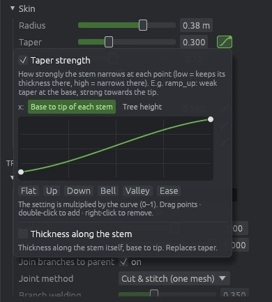
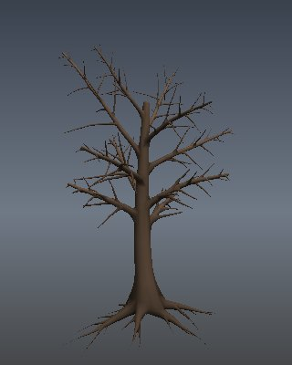
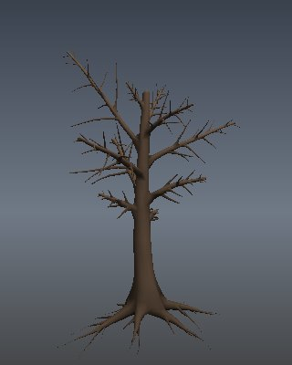
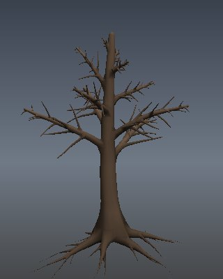

Curves
A curve lets a setting change along a stem or up the tree instead of having one value everywhere. Use curves to make the lower branches longer than the upper ones, to let a trunk keep its thickness low down, or to make branches droop only at their tips.
How a curve works
A curve maps a position x from 0 to 1 to a factor from 0 to 1. Wherever the setting is used, ArborStudio multiplies its value by the curve's factor at that position. With a Gravity of 0.6 and a curve that rises from 0 to 1, a stem has no gravity at its base and the full 0.6 at its tip.
What x measures depends on the setting:
| Setting | x runs along |
|---|---|
| Length, Angle, Radius, Count (density), Angle variation, Length variation, Kink, Broken branches, leaf Size, Fold, Curl, Face the sky | The parent, from Start (0) to End (1). Each child takes the factor at the point where it grows. |
| Taper, Thickness, Gravity, Wiggle, Jitter, Force response, Flute depth, Flatten, Bark lumps | The stem itself, from its base (0) to its tip (1). |
Instead, any curve can follow the tree height: x is then 0 at the ground and 1 at the top of the tree, the same for every branch level. A gravity curve along the tree height, for example, makes all branches in the upper crown droop, wherever they start.
Editing a curve

- Click the curve button at the end of a setting's row in the Properties panel. The curve editor opens below it.
- Select the check box next to the curve's name to switch the curve on. The button turns green while a curve is on.
- Choose what x measures: along the parent or the stem, or Tree height.
- Click a shape button to start from a preset: Flat, Up, Down, Bell, Valley or Ease.
- Drag the points to change the curve. Double-click the graph to add a point; right-click a point to remove it.
- Click outside the popup to close it. The viewport updates while you edit.
Some settings offer more than one curve in the same popup. Taper, for example, has Taper strength and Thickness along the stem; see Thickness and bark surface.
Example: the shape of the crown
A Length curve on the main branches replaces the crown profile and gives the crown any outline you draw.



Example: trunk taper
By default a trunk narrows evenly from base to tip. With a Taper strength curve set to Up, the trunk narrows little near the ground and more towards the top, as in many old trees. The thickness at the tip still matches the Taper value.
Curves for agents and scripts
Agents set curves with the set_curve tool. It takes the generator, the curve's name, and either a preset (flat, ramp_up, ramp_down, bell, valley, ease_out) or a list of points, plus along: "tree_height" for curves that follow the tree height. The parameter reference lists the curve names.